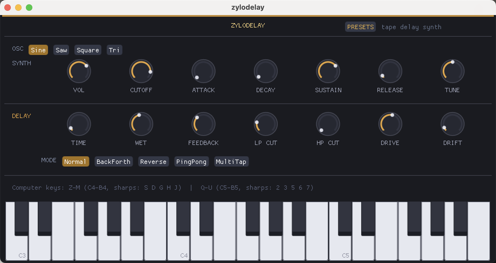

A playable source before the echoes.
Sine, saw, square, and triangle oscillators feed volume, cutoff, attack, decay, sustain, release, and tune controls.
About
Zylodelay is a delay instrument, not just a delay insert. Choose an oscillator, shape it with a compact synth section, then push it through tape-inspired delay modes, feedback, filters, drive, and drift from one fast performance panel.
Available as VST3, AU · Windows & Mac · 64-bit only

Core Instrument
Sine, saw, square, and triangle oscillators feed volume, cutoff, attack, decay, sustain, release, and tune controls.
Delay time, wet amount, feedback, low-pass cut, high-pass cut, drive, and drift put the whole echo path under your fingers.
Normal, BackForth, Reverse, PingPong, and MultiTap modes let the same patch become tight, wide, rhythmic, or unstable.
Preset browsing lives in the top bar, making it easy to jump from classic tape delay synth tones to more experimental echoes.
Tape Delay Synth
The on-screen keyboard turns Zylodelay into a self-contained idea machine. Trigger notes, choose the oscillator shape, and sculpt the synth envelope before the signal ever reaches the delay network.
It is built for sketching rhythmic hooks, washed-out stabs, and unstable tape-style textures without opening a DAW track first. The delay modes turn simple notes into movement: tight repeats, ping-pong patterns, reverse swells, or dense multitap echoes that can be pushed with drive and drift.
Oscillator
Envelope
Delay Mode
Feedback Filters
Drive + Drift
Choose the mode, shape the repeats, then push the echoes with cutoff, feedback, drive, and drift.
Feature List
Playable synth-delay design with oscillator source, ADSR shaping, and keyboard input
Delay controls for time, wet level, feedback, low-pass cut, high-pass cut, drive, and drift
Normal, BackForth, Reverse, PingPong, and MultiTap delay modes
Preset browser for tape delay synth patches and quick sound changes
Built-in keyboard plus computer-key mapping for fast sketching
Compact single-screen layout with no hidden pages required for core sound design
Audio Samples
Tape Drift
Warm delay repeats with cutoff movement and unstable pitch drift.
Ping Pong Keys
Playable plucks bouncing through filtered stereo feedback.
Reverse Haze
Soft reverse-like swells feeding a darker delay wash.
System Requirements